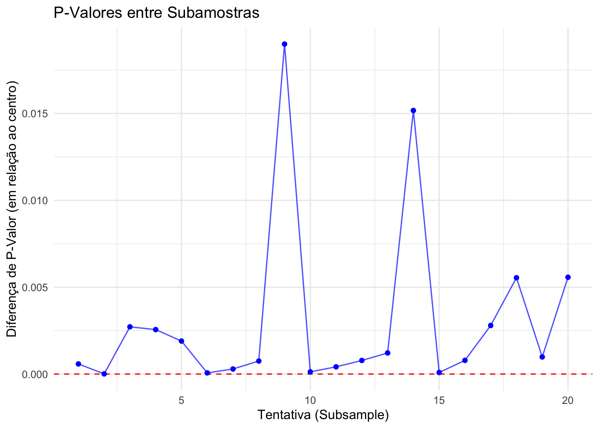

A partir de um design observacional, podemos realizar uma técnica de pareamento estatístico, que busca estimar o efeito de um tratamento, política ou intervenção, levando em consideração possíveis covariáveis que podem afetar o tratamento.
Rosenbaum e Rubin introduziram está técnica em 1983, atribuindo uma probabilidade condicional de cada observação fazer parte do tratamento. Esta probabilidade de fazer parte do tratamento, é baseada nos scores das covariáveis.
Foi percebido então, que ao adotar este método antes de efetivamente estimar os efeitos de um tratamento em uma população em um estudo observacional, podemos reduzir as ameaças à validade interna, provocadas principalmente pela não randomização, ou seja, por não ter um design experimental.
O matching nada mais é do que a criação de um grupo de controle artificial, com probabilidades pareadas entre os grupos par a par (tratamento e controle).
O score de propensão indica o quão apto ou propenso, a observação está para receber o tratamento. Esse score é formado justamente pelas covariáveis (características que influenciam a variável de tratamento).
Vantagens e desvantagens
O PSM consegue reduzir substancialmente o viés de seleção em estudos observacionais
Não podemos dizer que o design observacional foi alterado para um experimento natural, simplesmente por adotar o PSM na análise. O PSM altera o design, se aproximando de um design quasi-experimental.
Apesar do evento ou tratamento ser natural, O PSM é deliberadamente aplicado pelo pesquisador para equilibrar os grupos e fortalecer as inferências causais.
O PSM não considera variáveis latentes como covariáveis. Isso quer dizer que, qualquer efeito não observável que esteja confundindo as relações entre as variáveis de interesse, não são aplicáveis no PSM.
As alternativas para o caso anterior, incluem modelagem de equações estruturais, análise multinível e outras técnicas de quasi-experimento que lidam com variáveis latentes (variáveis instrumentais e regressão discontínua, por exemplo).
O próprio PSM, com algumas inovações no algoritmo, permite trabalhar com variáveis latentes. Normalmente, as técnicas quasi-experimentais tem recebido atenção dos pesquisadores para gerar versões com sufixo latente.
Exemplo completo
Vamos analisar os dados de crianças (ecls.csv) sobre o efeito de ir em uma escola católica oposta a uma escola pública, para verificar o desempenho em matemática.
Percebemos que estudantes das escolas católicas tiveram nota de matemática maior do que os de escola pública (em 20% a mais, considerando o desvio padronizado).
Aparentemente as notas estão na mesma escala, então podemos conduzir um teste de comparação de médias sem os valores padronizados. Mas antes, vamos ver como a nota bruta foi padronizada. Para não alterar a base original, coloquei em um novo objeto ecls2, a variável mat_stand, que é a mesma de c5r2mtsc_std
Agora conduzindo o teste, vamos utilizar o teste t de amostras independentes, já que temos dois grupos independentes na variável de tratamento.
t.test(c5r2mtsc_std ~ catholic, data=ecls)
Welch Two Sample t-test
data: c5r2mtsc_std by catholic
t = -9.1069, df = 2214.5, p-value < 2.2e-16
alternative hypothesis: true difference in means between group 0 and group 1 is not equal to 0
95 percent confidence interval:
-0.2727988 -0.1761292
sample estimates:
mean in group 0 mean in group 1
-0.03059583 0.19386817
Obtivemos uma diferença significativa, com p < 0,05 e t = -9,10. Assim, evidenciamos a hipótese alternativa, rejeitando a hipótese nula de que as médias de matemática entre os grupos são iguais.
Avaliando as covariáveis utilizadas
race_white: Dummy se o estudante é branco (1) ou não (0)
p5hmage: Idade da mãe
w3income: Renda familiar
p5numpla: Número de lugares em que o estudante morou nos últimos 4 meses
w3momed_hsb: Se a mãe tem ensino médio completo ou abaixo (1) ou ensino superior (0)?
Warning: `funs()` was deprecated in dplyr 0.8.0.
ℹ Please use a list of either functions or lambdas:
# Simple named list: list(mean = mean, median = median)
# Auto named with `tibble::lst()`: tibble::lst(mean, median)
# Using lambdas list(~ mean(., trim = .2), ~ median(., na.rm = TRUE))
Ao considermos o uso de covariáveis na análise, passamos por um processo em que identificamos na literatura que as covariáveis podem influenciar a relação mensurada pelas variáveis de interesse. Ao não adotar essas covariáveis na análise, podemos tipifica-las como confundidoras. Ao decidir adotar, vamos tipifica-las como variáveis de controle. Quando varremos a literatura, identificamos possíveis covariáveis e decidimos inclui-las na análise, estamos aumentando a validade interna do modelo a ser testado.
Verificamos de forma exploratória, que há diferenças de médias das covariáveis com a variável de tratamento. Vamos verificar se estas diferenças são significativas:
[[1]]
Welch Two Sample t-test
data: ecls[, v] by ecls[, "catholic"]
t = -13.453, df = 2143.3, p-value < 2.2e-16
alternative hypothesis: true difference in means between group 0 and group 1 is not equal to 0
95 percent confidence interval:
-0.1936817 -0.1444003
sample estimates:
mean in group 0 mean in group 1
0.5561246 0.7251656
[[2]]
Welch Two Sample t-test
data: ecls[, v] by ecls[, "catholic"]
t = -12.665, df = 2186.9, p-value < 2.2e-16
alternative hypothesis: true difference in means between group 0 and group 1 is not equal to 0
95 percent confidence interval:
-2.326071 -1.702317
sample estimates:
mean in group 0 mean in group 1
37.56097 39.57516
[[3]]
Welch Two Sample t-test
data: ecls[, v] by ecls[, "catholic"]
t = -20.25, df = 1825.1, p-value < 2.2e-16
alternative hypothesis: true difference in means between group 0 and group 1 is not equal to 0
95 percent confidence interval:
-29818.10 -24552.18
sample estimates:
mean in group 0 mean in group 1
54889.16 82074.30
[[4]]
Welch Two Sample t-test
data: ecls[, v] by ecls[, "catholic"]
t = 4.2458, df = 2233.7, p-value = 2.267e-05
alternative hypothesis: true difference in means between group 0 and group 1 is not equal to 0
95 percent confidence interval:
0.02150833 0.05842896
sample estimates:
mean in group 0 mean in group 1
1.132669 1.092701
[[5]]
Welch Two Sample t-test
data: ecls[, v] by ecls[, "catholic"]
t = 18.855, df = 2107.3, p-value < 2.2e-16
alternative hypothesis: true difference in means between group 0 and group 1 is not equal to 0
95 percent confidence interval:
0.2122471 0.2615226
sample estimates:
mean in group 0 mean in group 1
0.4640918 0.2272069
Apontamos que todas as candidatas a variável controle indicam diferenças significativas entre os grupos. Portanto, vale a pena incluir todas como variáveis de controle.
Estimação dos propensity scores
Agora vamos começar o PSM. Decidimos adotar uma técnica de quasi-experimento que busca criar um grupo de controle artificial, agrupando pares de observações, com características muito parecidas, baseadas nas covariáveis. Dessa forma, podemos isolar os efeitos de outras variáveis na relação que queremos mensurar. Em outras palavras, estamos construindo um contrafactual, alterando o design da pesquisa para um mais robusto (com maior validade interna).
Call:
glm(formula = catholic ~ race_white + w3income_1k + p5hmage +
p5numpla + w3momed_hsb, family = binomial(), data = ecls)
Coefficients:
Estimate Std. Error z value Pr(>|z|)
(Intercept) -3.2125519 0.2379826 -13.499 < 2e-16 ***
race_white 0.3145014 0.0700895 4.487 7.22e-06 ***
w3income_1k 0.0073038 0.0006495 11.245 < 2e-16 ***
p5hmage 0.0292168 0.0050771 5.755 8.69e-09 ***
p5numpla -0.1439392 0.0912255 -1.578 0.115
w3momed_hsb -0.6935868 0.0743207 -9.332 < 2e-16 ***
---
Signif. codes: 0 '***' 0.001 '**' 0.01 '*' 0.05 '.' 0.1 ' ' 1
(Dispersion parameter for binomial family taken to be 1)
Null deviance: 7701.3 on 9266 degrees of freedom
Residual deviance: 7168.8 on 9261 degrees of freedom
(1811 observations deleted due to missingness)
AIC: 7180.8
Number of Fisher Scoring iterations: 5
Basicamente, rodamos um modelo de regressão logística para calcular os propensity scores (a probabilidade de cada observação de fazer parte de um grupo da variável de tratamento). Com esse passo inicial, observações que são de um grupo, mas tem características comuns a de outro, são classificados com base nas características (covariáveis).
prs_df <-data.frame(pr_score =predict(m_ps, type ="response"),catholic = m_ps$model$catholic)head(prs_df)
Vamos verificar o resultado da classificação de scores, utilizando histogramas:
labs <-paste("São de escola:", c("Catholic", "Public"))prs_df %>%mutate(catholic =ifelse(catholic ==1, labs[1], labs[2])) %>%ggplot(aes(x = pr_score)) +geom_histogram(color ="white") +facet_wrap(~catholic) +xlab("Probabilidade de ser de escola católica") +theme_bw()
`stat_bin()` using `bins = 30`. Pick better value with `binwidth`.
Como o grupo de escola católica é menor, é natural que os propensity scores acompanhem o número de observações do grupo menor.
Executando o matching
Agora podemos parear os dados. Estamos limitados a região de suporte comum, como foi definido anteriormente. O método ou algoritmo adotado aqui, irá procurar pares de observações com propensity scores mais próximos. Na limitação deste método, outros podem ser adotados. Neste momento, também vamos omitir os dados ausentes, pois atrapalham o algoritmo de matching.
ecls_nomiss <- ecls %>%# MatchIt does not allow missing valuesselect(c5r2mtsc_std, catholic, one_of(ecls_cov)) %>%na.omit()mod_match <-matchit(catholic ~ race_white + w3income + p5hmage + p5numpla + w3momed_hsb,method ="nearest", data = ecls_nomiss)
O modelo foi gerado. Agora, podemos verificar alguns resultados de qualidade do modelo:
dta_m <-match.data(mod_match)dim(dta_m)
[1] 2704 10
summary(mod_match)
Call:
matchit(formula = catholic ~ race_white + w3income + p5hmage +
p5numpla + w3momed_hsb, data = ecls_nomiss, method = "nearest")
Summary of Balance for All Data:
Means Treated Means Control Std. Mean Diff. Var. Ratio eCDF Mean
distance 0.1927 0.1379 0.6486 1.0007 0.2086
race_white 0.7411 0.5914 0.3418 . 0.1497
w3income 82568.9357 55485.0210 0.5777 1.1373 0.1565
p5hmage 39.5932 37.5658 0.3874 0.6383 0.0408
p5numpla 1.0917 1.1298 -0.1242 0.6132 0.0076
w3momed_hsb 0.2234 0.4609 -0.5703 . 0.2375
eCDF Max
distance 0.3109
race_white 0.1497
w3income 0.3062
p5hmage 0.1893
p5numpla 0.0277
w3momed_hsb 0.2375
Summary of Balance for Matched Data:
Means Treated Means Control Std. Mean Diff. Var. Ratio eCDF Mean
distance 0.1927 0.1927 0.0000 1.0000 0.0000
race_white 0.7411 0.7470 -0.0135 . 0.0059
w3income 82568.9357 81403.9926 0.0248 1.0114 0.0059
p5hmage 39.5932 39.5503 0.0082 1.0036 0.0016
p5numpla 1.0917 1.0762 0.0507 1.0627 0.0040
w3momed_hsb 0.2234 0.2152 0.0195 . 0.0081
eCDF Max Std. Pair Dist.
distance 0.0030 0.0002
race_white 0.0059 0.0811
w3income 0.0118 0.0536
p5hmage 0.0059 0.1416
p5numpla 0.0163 0.1184
w3momed_hsb 0.0081 0.0728
Sample Sizes:
Control Treated
All 7915 1352
Matched 1352 1352
Unmatched 6563 0
Discarded 0 0
Queremos que as diferenças de médias estema próximas de 0, para assim corroborar o bom pareamento, indicando que temos grupos bem parecidos e, consequentemente, controlando as covariáveis. Conseguimos parear 1352 observações de cad grupo (controle e tratamento), sem descartar nenhum dado não ausente do menor grupo (dos que estudam em escola católica).
Se tivermos problemas em gerar o modelo de matching, ou em obter bom ajustamento, podemos tentar outros algoritmos de matching.
Vamos agora verificar a diferença de médias que obtivemos:
Warning: `funs()` was deprecated in dplyr 0.8.0.
ℹ Please use a list of either functions or lambdas:
# Simple named list: list(mean = mean, median = median)
# Auto named with `tibble::lst()`: tibble::lst(mean, median)
# Using lambdas list(~ mean(., trim = .2), ~ median(., na.rm = TRUE))
Uma confirmação ainda mais precisa que o matching funcionou é rodar testes de comparação de médias, buscando encontrar a não rejeição da hipótese nula.
[[1]]
Welch Two Sample t-test
data: dta_m[, v] by dta_m$catholic
t = 0.35243, df = 2701.8, p-value = 0.7245
alternative hypothesis: true difference in means between group 0 and group 1 is not equal to 0
95 percent confidence interval:
-0.02700440 0.03883872
sample estimates:
mean in group 0 mean in group 1
0.7470414 0.7411243
[[2]]
Welch Two Sample t-test
data: dta_m[, v] by dta_m$catholic
t = -0.21331, df = 2702, p-value = 0.8311
alternative hypothesis: true difference in means between group 0 and group 1 is not equal to 0
95 percent confidence interval:
-0.4372485 0.3514496
sample estimates:
mean in group 0 mean in group 1
39.5503 39.5932
[[3]]
Welch Two Sample t-test
data: dta_m[, v] by dta_m$catholic
t = -0.64787, df = 2701.9, p-value = 0.5171
alternative hypothesis: true difference in means between group 0 and group 1 is not equal to 0
95 percent confidence interval:
-4690.731 2360.845
sample estimates:
mean in group 0 mean in group 1
81403.99 82568.94
[[4]]
Welch Two Sample t-test
data: dta_m[, v] by dta_m$catholic
t = -1.339, df = 2699.5, p-value = 0.1807
alternative hypothesis: true difference in means between group 0 and group 1 is not equal to 0
95 percent confidence interval:
-0.038278301 0.007213213
sample estimates:
mean in group 0 mean in group 1
1.076183 1.091716
[[5]]
Welch Two Sample t-test
data: dta_m[, v] by dta_m$catholic
t = -0.51108, df = 2701.5, p-value = 0.6093
alternative hypothesis: true difference in means between group 0 and group 1 is not equal to 0
95 percent confidence interval:
-0.03935185 0.02307966
sample estimates:
mean in group 0 mean in group 1
0.2152367 0.2233728
Efeito do tratamento na variável resposta
Finalmente, vamos nos voltar para as variáveis de interesse e rodar o modelo estatístico novamente, mas dessa vez, nos dados pareados.
t.test(c5r2mtsc_std ~ catholic, data = dta_m)
Welch Two Sample t-test
data: c5r2mtsc_std by catholic
t = 4.5214, df = 2682.1, p-value = 6.411e-06
alternative hypothesis: true difference in means between group 0 and group 1 is not equal to 0
95 percent confidence interval:
0.08929508 0.22605937
sample estimates:
mean in group 0 mean in group 1
0.3673451 0.2096679
Percebemos que agora a interpretação é o contrário. As notas de matemáticas são melhores na escola pública.
Quando isolamos as covariáveis (antes confundindo essa relação), obtivemos 16% a mais de desvios padronizados da nota de matemática para o grupo 0 (estudantes de escola pública).
Alguns apontamentos
Não é sempre que o uso do PSM consegue provocar esta mudança de interpretação das hipóteses, como ocorreu neste exemplo.
No entanto, conseguimos obter uma magnitude mais fidedigna, mais próxima da realidade, e assim podemos tomar decisões melhores.
Neste caso específico, a conclusão seria completamente equivocada, caso não adotassemos o PSM.
O design de pesquisa anterior era inapropriado para avaliar as diferenças no grupo de tratamento, justamente por haver serias ameaças à validade interna.
O PSM não só contornou esta situação, mas fez isso a partir de dados já coletados, sem a necessidade de ir a campo novamente fazer um experimento real (provavelmente seria inviável ou iria demorar muito tempo e seria caro).
Validação com subamostra
Sabemos que um n grande pode inflar o poder estatístico, levando a decisões erradas em testes de hipóteses. Portanto, para validar os resultados, é importante refazer o teste com as variáveis de interesse a partir de subamostra com n controlado (a partir do cálculo de poder estatístico).
Como temos uma larga amostra, vamos ser conservadores nos parâmetros de cálculo de amostra. Cohen define que para o teste t, temos um efeito pequeno em 0,2, médio em 0,5 e grande 0,8.
library (pwr)#Verificando amostra com power = 0,95pwr_result <-pwr.t.test(d =0.2, power =0.95, sig.level =0.05, type ="two.sample")total_sample_size <-round(pwr_result$n)total_sample_size
Agora fazemos o teste novamente com a esperança de obter resultados semelhantes
t.test(c5r2mtsc_std ~ catholic, data = sub_sample)
Welch Two Sample t-test
data: c5r2mtsc_std by catholic
t = 4.8048, df = 1295.9, p-value = 1.73e-06
alternative hypothesis: true difference in means between group 0 and group 1 is not equal to 0
95 percent confidence interval:
0.1428409 0.3399748
sample estimates:
mean in group 0 mean in group 1
0.4198846 0.1784767
Obtivemos regra de decisão igual. Portanto, o efeito inflacionado do poder estatístico não altera a conclusão final: Alunos de escolas públicas tem notas substancialmente maiores do que os alunos de escolas católicas.
# Configurar número de repetiçõesnum_repeticoes <-20# Número de subamostragens# Armazenar p-valoresp_valores <-numeric(num_repeticoes)# Loop para realizar subamostragens e calcular os p-valoresfor (i in1:num_repeticoes) {# Gerar subamostra sub_sample <- dta_m %>%group_by(catholic) %>%slice_sample(n = total_sample_size) %>%ungroup()# Realizar teste t com a subamostra teste_t <-t.test(c5r2mtsc_std ~ catholic, data = sub_sample) p_valores[i] <- teste_t$p.value}# Criar um data frame com os resultadosresultados <-data.frame(Tentativa =1:num_repeticoes,P_Valor = p_valores)# Criar o gráficoggplot(resultados, aes(x = Tentativa, y = P_Valor)) +geom_hline(yintercept =0, color ="red", linetype ="dashed") +geom_point(color ="blue") +geom_line(color ="blue", alpha =0.7) +labs(title ="P-Valores entre Subamostras",x ="Tentativa (Subsample)",y ="Diferença de P-Valor (em relação ao centro)" ) +theme_minimal()

Caso você tenha muitas subamostras com p > 0,05, um procedimento mais robusto pode ser feito: Ao invés de gerar subamostras da amostra pareada, você pode fazer o pareamento de cada subamostra. Assim, garantimos um melhor balanceamento. Se mesmo na forma mais conservadora de cálculo de amostra, os p-valores da subamostras discordarem, podemos afirmar que a diferença é inconclusiva e portanto, não rejeitamos a hipótese nula.